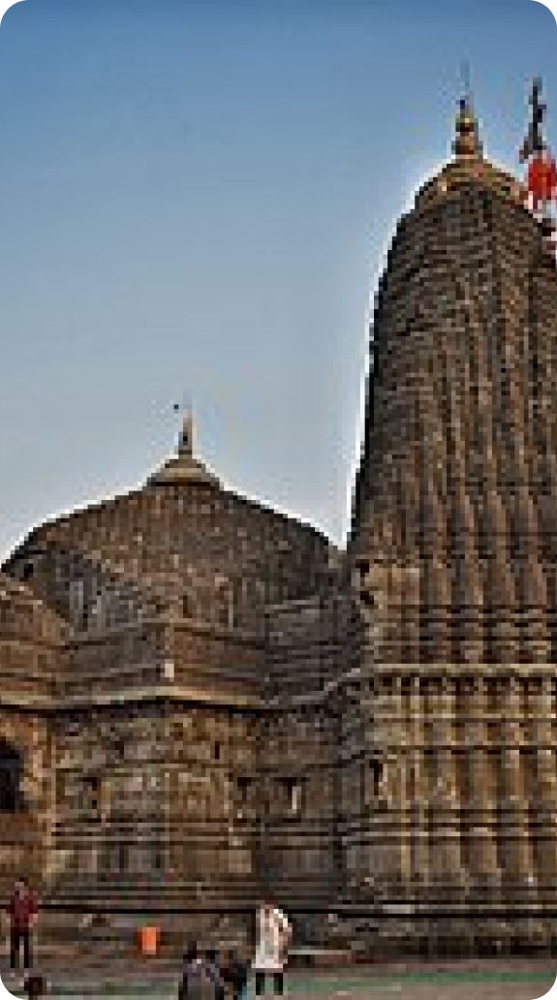

Religious & Spiritual
HOME
ABOUT
MAP
CONTACT
PRIVACY POLICY
PLACES TO VISIT
Historical
Religious & Spiritual
Parks & Recreation
Educational
Tours & Package
Copyright 2023 MH City

Timings :-
About :-
It is dedicated to Hindu god Shiva and is one of the twelve jyotirlingas where the Hindu genealogy registers at Trimbakeshwar, Maharashtra are kept. Shri Trimbakeshwar Shiva Temple is 30 kilometers on road from Nashik, and 157 kilometers from Thane. The best way to reach the temple is by road. The closest railway station is the Nashik Road Railway Station that is 39 kilometers by road.
Brief History: -
Shri Trimbakeshwar is a religious center having one of the twelve Jyotirlingas. The extraordinary feature of the Jyotirlinga located here is its three faces embodying Brahma, Vishnu, and Shiva. Due to the excessive use of water, the linga has started to erode. The Lingas are covered by a jeweled crown which is placed over the Gold Mask of Trideva (Brahma Vishnu Shiva).
Entry Fee :-
6 AM - 9PM (Daily)
Rs 200 (For VIP’s)

Trimbakeshwar
About
Places To Visit
Map
XPLOREMH